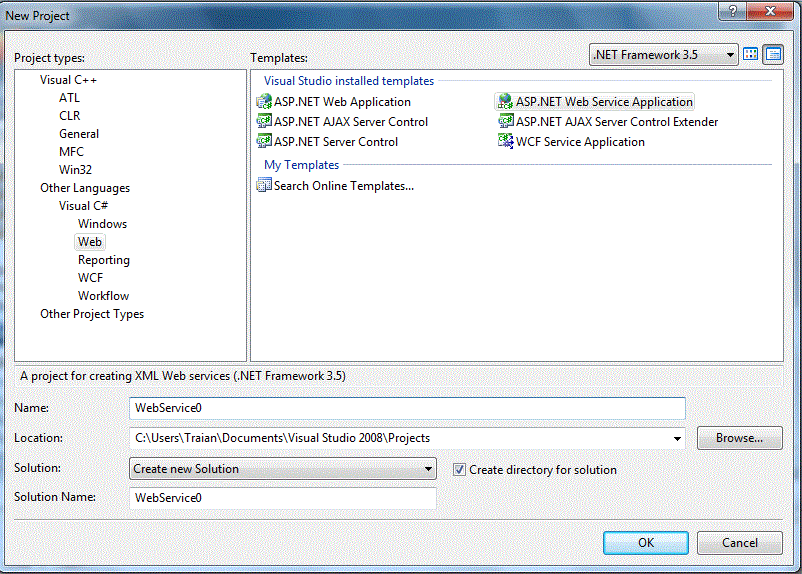
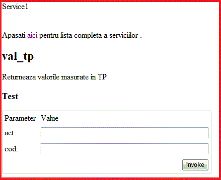
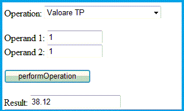
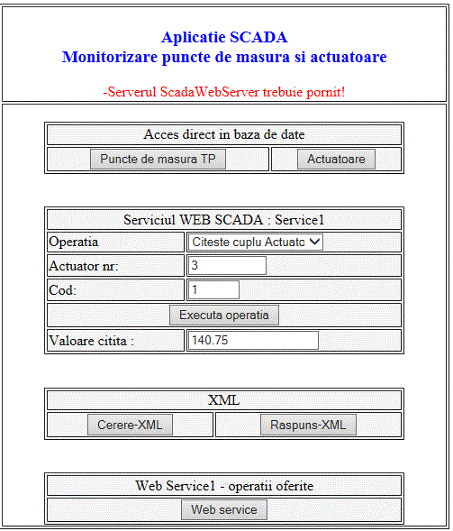

Vom crea un nou proiect utilizand Visual Studio 2008. Proiectul creat va fi de tipul C#-->WEB-->ASP.NET web Service Application

Se va genera automat un serviciu web Service1.asmx de forma:
Se ruleaza acest serviciu si se observa startarea unui server ASP.NET in acest caz pe portul 49707. Adresa portului
este data aleator in momentul generarii serviciului. Adresa "http://tempuri.org/" va trebui inlocuita cu "http://localhost:49707/Service0"
Utilizarea serviciilor web
Odata realizat un serviciu web, acesta poate fi utilizat de clienti constituiti din pagini web.
Vom adauga deci o pagina web care sa foloseasca acest serviciu. Pagina se va numi "Test_Service1.html"
Adaugarea se face cu Click dreapta pe Webservice0-->Add-->New Ittem-->Html Page
Continutul fisierului html fiind:
Vom crea un nou serviciu WebService1 mai complex, serviciu care permite accesul la o baza de date MySQL
Fisierul Service1.asmx de forma:
Dupa cum se observa, serviciul presupune ca exista deja instalata o conexiune ODBC spre baza de date
cons_el care se afla pe serverul 193.226.19.20, username "student" parola "psw"
Pagina web care sa foloseasca acest serviciu, va fi:
Dupa incarcarea paginii obtinem:

Aplicatia web poate fi lansata din orce browser ruland cu conditia sa fie pornit serviciul web
Dupa invocarea serviciului, se obtine valoarea ceruta in baza de date in format XML sub forma:
Utilizarea protocolului SOAP
Vom folosi in continuare protocolul SOAP bazat pe XML pentru a citi date prin intermediul serviciului web creat
Aplicatia este realizata in JavaScript si folosete protocolul SOAP pentru a citi date prin intermediul serviciului
Service1.
Dupa lansarea paginii si completarea cu parametrii ceruti, obtinem:

Aplicatia web poate fi lansata local din orice browser ruland cu conditia sa fie pornit serviciul web
Cererea este in format XML sub forma:
Raspunsul fiind tot in format XML sub forma:
In acest moment serverul "Webservice1" poate fi imbogatit cu noi servicii. Sa adaugam Service2 care citeste
valorile maxime din tabela t_points
Fisierul Service2.asmx are forma:
Pagina html client este similara cu clientul seviciului Service1
Aplicatie SCADA ce utilizeaza serviciul SOAP
Sa realizam acum un serviciu web si o aplicatie pentru monitorizarea unei instalatii de gaz in care exista mai
multe puncte de masura si mai ulte actuatoare care trebuiesc monitorizate.
Vom crea un nou server "ScadaWebServer" care contine serviciul Service1 in care vom include mai multe operatii
cum ar fi: citeste valori t_points, citire stare actuatoare, citire pozitia actuatorului etc.
Fisierul Service1.asmx are forma:
Vom crea acum o aplicatie client intr-o pagin web de forma:
Dupa lansarea paginii si completarea cu parametrii ceruti, obtinem:

Aplicatia web poate fi lansata local din orice browser ruland cu conditia sa fie pornit serviciul web